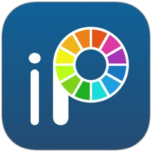

Painting with Ibis Paint can be categorized as a type of digital design or digital painting. Ibis Paint is an application that allows users to create digital paintings or illustrations using their mobile or tablet devices. In this case, the design is done digitally using the tools and features provided by the Ibis Paint application.